CODING AGENTS AS PIXEL WORLD MODELS
traex/DeepSeek-V4.1-Flash · phygen_157
点击播放 · 原生 RGB 像素
逐轮保存的候选
回放视频、检查图与代码变化。
每份候选均可单独播放。实际图片检查记录在下方工具轨迹中。
候选 01播放与检查图
点击播放 · 原生 RGB 像素
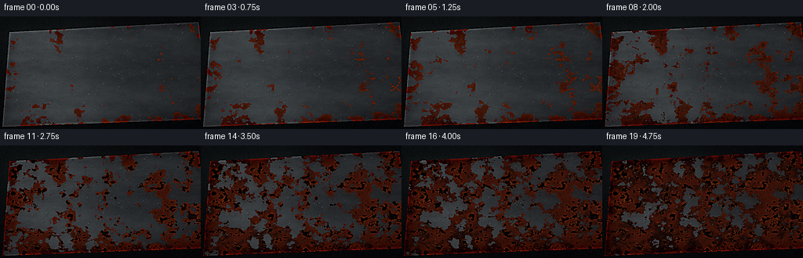
展开代码变化
--- 上一保存版本
+++ 本次保存版本
@@ -0,0 +1,374 @@
+"""Procedural macro timelapse of polished steel corroding in humid air."""
+
+from pathlib import Path
+
+import cv2
+import numpy as np
+from PIL import Image, ImageDraw, ImageFilter
+from scipy import ndimage
+
+import artifact_io
+
+
+WIDTH = 256
+HEIGHT = 144
+FRAME_COUNT = 20
+SUPERSAMPLE = 3
+W = WIDTH * SUPERSAMPLE
+H = HEIGHT * SUPERSAMPLE
+CASE_DIR = Path(__file__).resolve().parent
+RNG = np.random.default_rng(157)
+
+
+def smoothstep(edge0, edge1, values):
+ x = np.clip((values - edge0) / (edge1 - edge0), 0.0, 1.0)
+ return x * x * (3.0 - 2.0 * x)
+
+
+def normalize(values, low=2.0, high=98.0):
+ lo, hi = np.percentile(values, [low, high])
+ return np.clip((values - lo) / max(hi - lo, 1e-7), 0.0, 1.0)
+
+
+def fbm(seed, base_sigma, octaves=5, anisotropic=1.0):
+ rng = np.random.default_rng(seed)
+ result = np.zeros((H, W), dtype=np.float32)
+ total = 0.0
+ for octave in range(octaves):
+ sigma = max(base_sigma / (2.0**octave), 0.45)
+ field = rng.standard_normal((H, W), dtype=np.float32)
+ field = ndimage.gaussian_filter(
+ field, sigma=(sigma, sigma * anisotropic), mode="reflect"
+ )
+ weight = 1.0 / (1.7**octave)
+ result += weight * normalize(field)
+ total += weight
+ return normalize(result / total)
+
+
+def make_panel_mask():
+ mask_image = Image.new("L", (W, H), 0)
+ draw = ImageDraw.Draw(mask_image)
+ points = [
+ (12 * SUPERSAMPLE, 20 * SUPERSAMPLE),
+ (253 * SUPERSAMPLE, 7 * SUPERSAMPLE),
+ (267 * SUPERSAMPLE, 131 * SUPERSAMPLE),
+ (3 * SUPERSAMPLE, 141 * SUPERSAMPLE),
+ ]
+ draw.polygon(points, fill=255)
+ return np.asarray(mask_image, dtype=np.float32) / 255.0
+
+
+def make_scratch_layer(panel_mask):
+ image = Image.new("F", (W, H), 0.5)
+ draw = ImageDraw.Draw(image)
+ rng = np.random.default_rng(811)
+ for _ in range(88):
+ x = rng.uniform(-0.05, 1.05) * W
+ y = rng.uniform(0.06, 0.96) * H
+ length = rng.uniform(0.035, 0.28) * W
+ slope = rng.normal(0.0, 0.045)
+ value = rng.uniform(0.31, 0.69)
+ width = int(rng.integers(1, 3))
+ draw.line(
+ [(x, y), (x + length, y + slope * length)],
+ fill=float(value),
+ width=width,
+ )
+ scratches = np.asarray(image, dtype=np.float32)
+ scratches = ndimage.gaussian_filter(scratches, 0.42)
+ scratches = (scratches - 0.5) * panel_mask
+ return scratches
+
+
+def make_seed_field():
+ yy, xx = np.mgrid[0:H, 0:W].astype(np.float32)
+ rng = np.random.default_rng(412)
+ field = np.zeros((H, W), dtype=np.float32)
+ for _ in range(26):
+ cx = rng.uniform(0.04, 0.96) * W
+ cy = rng.uniform(0.08, 0.94) * H
+ radius = rng.uniform(0.014, 0.065) * W
+ stretch = rng.uniform(0.55, 1.5)
+ field += np.exp(
+ -(((xx - cx) / radius) ** 2 + ((yy - cy) / (radius * stretch)) ** 2)
+ )
+ return normalize(field)
+
+
+def make_droplets(panel_mask):
+ body = np.zeros((H, W), dtype=np.float32)
+ rim = np.zeros((H, W), dtype=np.float32)
+ highlight = np.zeros((H, W), dtype=np.float32)
+ rng = np.random.default_rng(2907)
+ yy, xx = np.mgrid[0:H, 0:W].astype(np.float32)
+
+ count = 112
+ for index in range(count):
+ for _ in range(50):
+ cx = rng.uniform(0.025, 0.975) * W
+ cy = rng.uniform(0.055, 0.955) * H
+ if panel_mask[int(cy), int(cx)] > 0.5:
+ break
+ large = index < 9
+ rx = rng.uniform(1.3, 4.0 if large else 2.5) * SUPERSAMPLE
+ ry = rx * rng.uniform(0.72, 1.18)
+ if large:
+ ry *= rng.uniform(1.0, 1.45)
+
+ pad_x = int(np.ceil(rx * 1.4))
+ pad_y = int(np.ceil(ry * 1.4))
+ x0, x1 = max(0, int(cx) - pad_x), min(W, int(cx) + pad_x + 1)
+ y0, y1 = max(0, int(cy) - pad_y), min(H, int(cy) + pad_y + 1)
+ local_x = xx[y0:y1, x0:x1]
+ local_y = yy[y0:y1, x0:x1]
+ q = ((local_x - cx) / rx) ** 2 + ((local_y - cy) / ry) ** 2
+ inside = q < 1.0
+ body[y0:y1, x0:x1] = np.maximum(
+ body[y0:y1, x0:x1], inside * (0.48 + 0.20 * (1.0 - q))
+ )
+ ring = np.exp(-((np.sqrt(np.maximum(q, 0.0)) - 0.88) / 0.10) ** 2)
+ rim[y0:y1, x0:x1] = np.maximum(rim[y0:y1, x0:x1], ring * inside)
+ hx = cx - rx * 0.30
+ hy = cy - ry * 0.36
+ hq = ((local_x - hx) / (rx * 0.42)) ** 2 + (
+ (local_y - hy) / (ry * 0.34)
+ ) ** 2
+ highlight[y0:y1, x0:x1] = np.maximum(
+ highlight[y0:y1, x0:x1], np.exp(-hq * 2.2) * inside
+ )
+
+ return (
+ ndimage.gaussian_filter(body * panel_mask, 0.35),
+ ndimage.gaussian_filter(rim * panel_mask, 0.38),
+ ndimage.gaussian_filter(highlight * panel_mask, 0.28),
+ )
+
+
+def render_frame(progress, static):
+ panel = static["panel"]
+ yy, xx = static["yy"], static["xx"]
+ xn, yn = xx / W, yy / H
+ edge = static["edge"]
+ scratches = static["scratches"]
+ brushed = static["brushed"]
+ fine = static["fine"]
+ cloud = static["cloud"]
+ suscept = static["suscept"]
+ rust_texture = static["rust_texture"]
+ rust_micro = static["rust_micro"]
+ droplets = static["droplets"]
+ droplet_rim = static["droplet_rim"]
+ droplet_highlight = static["droplet_highlight"]
+
+ # Soft, humid room behind the plate.
+ background = np.empty((H, W, 3), dtype=np.float32)
+ room = normalize(static["room_noise"])
+ glow = np.exp(-((xn - 0.17) ** 2 / 0.20 + (yn - 0.08) ** 2 / 0.17))
+ bg_lum = 0.035 + 0.095 * glow + 0.026 * room
+ background[..., 0] = bg_lum * 0.62
+ background[..., 1] = bg_lum * 0.78
+ background[..., 2] = bg_lum * 0.72
+
+ shadow = ndimage.gaussian_filter(panel, 8.0 * SUPERSAMPLE)
+ background *= (0.56 + 0.44 * shadow[..., None])
+
+ # Steel body: cool diffuse reflection, directional brushing, and a broad sheen.
+ key = 0.73 + 0.30 * (1.0 - xn) * (0.72 + 0.28 * (1.0 - yn))
+ sheen = np.exp(-((xn - (0.25 + 0.09 * yn)) / 0.30) ** 2)
+ micro_shade = (fine - 0.5) * 0.055
+ brushed_shade = (brushed - 0.5) * 0.105
+ scratch_shade = scratches * 0.34
+ steel_lum = key * (
+ 0.41
+ + 0.055 * cloud
+ + brushed_shade
+ + micro_shade
+ + scratch_shade
+ + 0.095 * sheen
+ )
+ steel = np.empty((H, W, 3), dtype=np.float32)
+ steel[..., 0] = steel_lum * 0.84
+ steel[..., 1] = steel_lum * 0.91
+ steel[..., 2] = steel_lum * 0.93
+ steel += 0.028 * sheen[..., None] * np.array([0.82, 0.96, 1.0])
+
+ # Corrosion begins at edges, scratches, and moisture-rich pockets, then floods
+ # across the plate in broad, irregular fronts.
+ threshold = 0.835 - 0.615 * (progress**0.94)
+ perturbation = 0.040 * (rust_micro - 0.5) + 0.035 * (rust_texture - 0.5)
+ rust = smoothstep(threshold, threshold + 0.052, suscept + perturbation)
+ rust *= panel
+ age = smoothstep(0.10, 0.93, progress)
+
+ # Tea-colored oxide staining creeps downward from active corrosion.
+ stain_source = ndimage.gaussian_filter(rust * (0.35 + 0.65 * rust_texture), 1.2)
+ stain = ndimage.gaussian_filter(stain_source, sigma=(5.0 * SUPERSAMPLE, 0.75))
+ stain = np.roll(stain, int(2.5 * SUPERSAMPLE), axis=0)
+ stain = np.clip(stain * (0.18 + 0.35 * progress), 0.0, 0.34)
+
+ dark_oxide = np.array([0.145, 0.048, 0.020], dtype=np.float32)
+ red_oxide = np.array([0.44, 0.125, 0.035], dtype=np.float32)
+ orange_oxide = np.array([0.72, 0.285, 0.055], dtype=np.float32)
+ ochre = np.array([0.63, 0.38, 0.105], dtype=np.float32)
+
+ texture_mix = smoothstep(0.28, 0.78, rust_texture)
+ rust_color = (
+ dark_oxide[None, None, :] * (1.0 - texture_mix[..., None])
+ + red_oxide[None, None, :] * texture_mix[..., None]
+ )
+ rust_color += (orange_oxide - rust_color) * (
+ smoothstep(0.60, 0.91, rust_micro) * (0.28 + 0.26 * progress)
+ )[..., None]
+ rust_color += (ochre - rust_color) * (
+ 0.13 * smoothstep(0.55, 0.90, cloud) * (1.0 - age)
+ )[..., None]
+
+ # Raised, crusty flakes and the bright leading edge of each rust patch.
+ flake_texture = ndimage.gaussian_filter(static["flake_noise"], 1.1 * SUPERSAMPLE)
+ flake = rust * smoothstep(0.53, 0.72, normalize(flake_texture))
+ flake_shade = (flake_texture - 0.5) * 0.28
+ rust_color *= (1.0 + flake_shade * flake)[..., None]
+ boundary = np.clip(rust - ndimage.gaussian_filter(rust, 1.3 * SUPERSAMPLE), 0, 1)
+ boundary = ndimage.gaussian_filter(boundary, 0.45 * SUPERSAMPLE)
+ rust_color += boundary[..., None] * np.array([0.33, 0.13, 0.025])
+
+ # Small black corrosion pits with warm oxide rims.
+ pit_seed = normalize(
+ rust_micro * 0.72 + static["pit_noise"] * 0.38 + rust_texture * 0.12
+ )
+ pits = rust * smoothstep(0.735, 0.845, pit_seed) * smoothstep(0.18, 0.62, progress)
+ pit_rim = np.clip(
+ ndimage.gaussian_filter(pits, 1.4 * SUPERSAMPLE) - pits, 0.0, 1.0
+ )
+ pit_rim = ndimage.gaussian_filter(pit_rim, 0.35 * SUPERSAMPLE)
+ rust_color = rust_color * (1.0 - 0.88 * pits[..., None])
+ rust_color += pit_rim[..., None] * np.array([0.38, 0.13, 0.025])
+
+ stain_color = np.array([0.34, 0.14, 0.045], dtype=np.float32)
+ steel = steel * (1.0 - stain[..., None]) + stain_color * stain[..., None]
+ steel = steel * (1.0 - rust[..., None]) + rust_color * rust[..., None]
+
+ # Condensation sits above both steel and oxide. Highlights pick up local color.
+ moisture = 0.55 + 0.22 * smoothstep(0.0, 0.55, progress)
+ body_alpha = droplets * moisture
+ wet_tint = 0.78 + 0.22 * np.clip(steel[..., 1] * 3.0, 0.0, 1.0)
+ steel = steel * (1.0 - 0.18 * body_alpha[..., None])
+ steel += droplet_rim[..., None] * np.array([0.055, 0.065, 0.060])
+ steel += droplet_highlight[..., None] * np.array([0.24, 0.27, 0.27]) * wet_tint[
+ ..., None
+ ]
+
+ # Beveled plate edge and a restrained dark border sell the slab's thickness.
+ edge_light = np.exp(-edge / (1.2 * SUPERSAMPLE))
+ edge_dark = np.exp(-edge / (4.8 * SUPERSAMPLE))
+ rim_shade = 0.52 + 0.52 * edge_light
+ steel *= rim_shade[..., None]
+ steel -= 0.10 * edge_dark[..., None] * np.array([0.82, 0.94, 1.0])
+ steel = np.clip(steel, 0.0, 1.4)
+
+ image = background * (1.0 - panel[..., None]) + steel * panel[..., None]
+
+ # Humid bloom and a soft lens vignette.
+ bright = np.maximum(image - 0.54, 0.0)
+ bloom = ndimage.gaussian_filter(bright, 7.0 * SUPERSAMPLE)
+ image += bloom * 0.16
+ vignette = np.clip(1.08 - 0.42 * ((xn - 0.5) ** 2 + (yn - 0.5) ** 2), 0.60, 1.0)
+ image *= vignette[..., None]
+
+ # Subtle cool atmosphere in the shadows and warm rust highlights.
+ luminance = image.mean(axis=2, keepdims=True)
+ image = image * 0.92 + luminance * 0.08
+ image[..., 2] += (1.0 - smoothstep(0.05, 0.55, luminance[..., 0])) * 0.010
+ image = np.clip(image, 0.0, 1.0)
+
+ rgb = Image.fromarray(np.round(image * 255).astype(np.uint8), "RGB")
+ rgb = rgb.resize((WIDTH, HEIGHT), Image.Resampling.LANCZOS)
+ rgb = rgb.filter(ImageFilter.UnsharpMask(radius=1.1, percent=115, threshold=3))
+ final = np.asarray(rgb, dtype=np.float32)
+
+ grain_rng = np.random.default_rng(9200 + int(progress * 10000))
+ grain = grain_rng.normal(0.0, 1.8, (HEIGHT, WIDTH, 1)).astype(np.float32)
+ final = np.clip(final + grain, 0, 255).astype(np.uint8)
+ return final
+
+
+def build_static_scene():
+ panel = make_panel_mask()
+ yy, xx = np.mgrid[0:H, 0:W].astype(np.float32)
+ edge = ndimage.distance_transform_edt(panel > 0.5).astype(np.float32)
+ scratches = make_scratch_layer(panel)
+ brushed = fbm(31, 8.0 * SUPERSAMPLE, octaves=4, anisotropic=6.0)
+ fine = fbm(77, 1.5 * SUPERSAMPLE, octaves=4, anisotropic=2.6)
+ cloud = fbm(119, 38.0 * SUPERSAMPLE, octaves=4)
+ room_noise = fbm(203, 24.0 * SUPERSAMPLE, octaves=4)
+ seed_field = make_seed_field()
+ rust_texture = fbm(523, 6.0 * SUPERSAMPLE, octaves=5)
+ rust_micro = fbm(662, 1.8 * SUPERSAMPLE, octaves=4, anisotropic=1.5)
+ flake_noise = fbm(991, 10.0 * SUPERSAMPLE, octaves=4)
+ pit_noise = fbm(1201, 1.15 * SUPERSAMPLE, octaves=3)
+ droplets, droplet_rim, droplet_highlight = make_droplets(panel)
+
+ edge_proximity = np.exp(-edge / (9.0 * SUPERSAMPLE))
+ scratch_susceptibility = smoothstep(0.08, 0.34, np.abs(scratches))
+ bottom_moisture = smoothstep(0.52, 1.0, yy / H) * 0.08
+ suscept = normalize(
+ 0.48 * rust_texture
+ + 0.20 * rust_micro
+ + 0.17 * edge_proximity
+ + 0.10 * seed_field
+ + 0.08 * scratch_susceptibility
+ + bottom_moisture
+ )
+
+ return {
+ "panel": panel,
+ "yy": yy,
+ "xx": xx,
+ "edge": edge,
+ "scratches": scratches,
+ "brushed": brushed,
+ "fine": fine,
+ "cloud": cloud,
+ "room_noise": room_noise,
+ "suscept": suscept,
+ "rust_texture": rust_texture,
+ "rust_micro": rust_micro,
+ "flake_noise": flake_noise,
+ "pit_noise": pit_noise,
+ "droplets": droplets,
+ "droplet_rim": droplet_rim,
+ "droplet_highlight": droplet_highlight,
+ }
+
+
+def main():
+ static = build_static_scene()
+ frames = []
+ timeline = np.linspace(0.0, 1.0, FRAME_COUNT) ** 1.16
+ for index, progress in enumerate(timeline):
+ frame = render_frame(float(progress), static)
+ frames.append(frame)
+ print(f"rendered {index + 1:02d}/{FRAME_COUNT}", flush=True)
+
+ frames = np.stack(frames)
+ artifact_io.save(frames, CASE_DIR)
+
+ video_path = CASE_DIR / "steel_corrosion_timelapse.mp4"
+ writer = cv2.VideoWriter(
+ str(video_path),
+ cv2.VideoWriter_fourcc(*"mp4v"),
+ 4.0,
+ (WIDTH, HEIGHT),
+ )
+ if writer.isOpened():
+ for frame in frames:
+ writer.write(cv2.cvtColor(frame, cv2.COLOR_RGB2BGR))
+ writer.release()
+ else:
+ writer.release()
+ print("MP4 encoder unavailable; frame artifacts were still written")
+
+
+if __name__ == "__main__":
+ main()
候选 02播放与检查图
点击播放 · 原生 RGB 像素
展开代码变化
--- 上一保存版本
+++ 本次保存版本
@@ -195,7 +195,9 @@
# Corrosion begins at edges, scratches, and moisture-rich pockets, then floods
# across the plate in broad, irregular fronts.
- threshold = 0.835 - 0.615 * (progress**0.94)
+ # A high first threshold leaves the clean plate almost untouched, but a
+ # slow early fall lets tiny oxide nuclei appear before the main fronts move.
+ threshold = 0.905 - 0.690 * (progress**0.72)
perturbation = 0.040 * (rust_micro - 0.5) + 0.035 * (rust_texture - 0.5)
rust = smoothstep(threshold, threshold + 0.052, suscept + perturbation)
rust *= panel
@@ -205,7 +207,7 @@
stain_source = ndimage.gaussian_filter(rust * (0.35 + 0.65 * rust_texture), 1.2)
stain = ndimage.gaussian_filter(stain_source, sigma=(5.0 * SUPERSAMPLE, 0.75))
stain = np.roll(stain, int(2.5 * SUPERSAMPLE), axis=0)
- stain = np.clip(stain * (0.18 + 0.35 * progress), 0.0, 0.34)
+ stain = np.clip(stain * (0.08 + 0.32 * progress), 0.0, 0.34)
dark_oxide = np.array([0.145, 0.048, 0.020], dtype=np.float32)
red_oxide = np.array([0.44, 0.125, 0.035], dtype=np.float32)
候选 03播放与检查图
点击播放 · 原生 RGB 像素

展开代码变化
代码未变化；重新保存了产物。
候选 04播放与检查图
点击播放 · 原生 RGB 像素
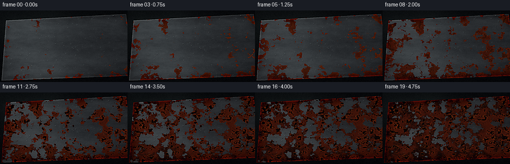
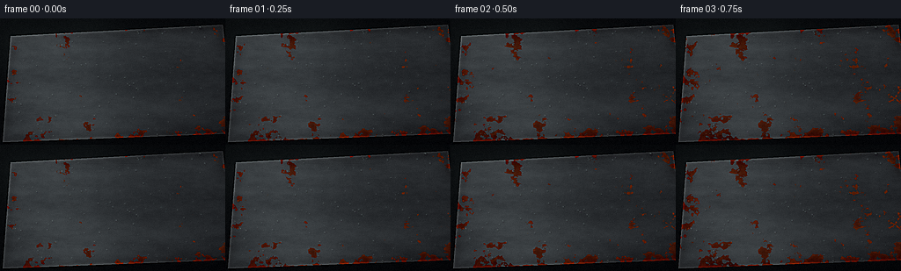
展开代码变化
--- 上一保存版本
+++ 本次保存版本
@@ -284,7 +284,7 @@
image[..., 2] += (1.0 - smoothstep(0.05, 0.55, luminance[..., 0])) * 0.010
image = np.clip(image, 0.0, 1.0)
- rgb = Image.fromarray(np.round(image * 255).astype(np.uint8), "RGB")
+ rgb = Image.fromarray(np.round(image * 255).astype(np.uint8))
rgb = rgb.resize((WIDTH, HEIGHT), Image.Resampling.LANCZOS)
rgb = rgb.filter(ImageFilter.UnsharpMask(radius=1.1, percent=115, threshold=3))
final = np.asarray(rgb, dtype=np.float32)
可观测工具轨迹
实际执行的命令与返回图片。
命令 1exit 0
/bin/bash -c "pwd && rg --files -g 'prompt.txt' -g 'GENERATION_RULES.md' -g 'task_spec.json' -g '"'!node_modules'"' -g '"'!*.mp4'"'"
命令 2exit 0
/bin/bash -c 'ls -la'
命令 3exit 0
/bin/bash -c "find . -maxdepth 2 -type f | sort | sed -n '1,200p'"
命令 4exit 0
/bin/bash -c 'cat prompt.txt'
命令 5exit 0
/bin/bash -c 'cat GENERATION_RULES.md'
命令 6exit 0
/bin/bash -c 'cat task_spec.json'
命令 7exit 0
/bin/bash -c "sed -n '1,240p' artifact_io.py"
命令 8exit 0
/bin/bash -c "python - <<'PY'
import importlib.util
for m in ['numpy','PIL','scipy','cv2','imageio','skimage']:
print(m, bool(importlib.util.find_spec(m)))
PY"命令 9exit 0
/bin/bash -c 'ffmpeg -version | head -n 3 || true'
命令 10exit 0
/bin/bash -c "sed -n '1,220p' player_template.html"
命令 11exit 0
/bin/bash -c 'python generate.py'
命令 12exit 0
/bin/bash -c "python - <<'PY'
from pathlib import Path
from PIL import Image
import numpy as np
frames=[np.asarray(Image.open(p).convert('RGB')).astype(float) for p in sorted(Path('frames').glob('*.png'))]
for i in range(1,len(frames)):
print(i, round(np.abs(frames[i]-frames[i-1]).mean(),2))
print('range mean', np.abs(frames[-1]-frames[0]).mean())
PY"命令 13exit 0
/bin/bash -c "python - <<'PY'
from PIL import Image
import numpy as np
for f in [0,4,9,14,19]:
a=np.asarray(Image.open(f'frames/{f:02d}.png').convert('RGB'))
# rough rust amount: red dominance
r,g,b=a[...,0].astype(float),a[...,1].astype(float),a[...,2].astype(float)
print(f, np.mean(r-g), np.mean((r-g)>30), np.quantile(r-g,[.1,.5,.9]))
PY"命令 14exit 0
/bin/bash -c "python - <<'PY' import numpy as np p=np.linspace(0,1,20)**1.16 for i,x in enumerate(p): print(i,round(x,3),round(.835-.615*x**.94,3)) PY"
命令 15exit 0
/bin/bash -c 'python generate.py'
命令 16exit 0
/bin/bash -c "ls -lh index.html pixels.npz frames/00.png frames/19.png steel_corrosion_timelapse.mp4 && python - <<'PY'
from pathlib import Path
from PIL import Image
import numpy as np, json, cv2
spec=json.loads(Path('task_spec.json').read_text())
paths=sorted(Path('frames').glob('*.png'))
a=np.stack([np.asarray(Image.open(p).convert('RGB')) for p in paths])
print('frames',a.shape,'range',a.min(),a.max(),'std',round(float(a.std()),2))
print('pair diffs', [round(float(np.abs(a[i]-a[i-1]).mean()),2) for i in range(1,len(a))])
cap=cv2.VideoCapture('steel_corrosion_timelapse.mp4')
print('video',cap.get(cv2.CAP_PROP_FRAME_WIDTH),cap.get(cv2.CAP_PROP_FRAME_HEIGHT),cap.get(cv2.CAP_PROP_FRAME_COUNT),cap.get(cv2.CAP_PROP_FPS),cap.isOpened())
cap.release()
print('spec',spec)
PY"命令 17exit 0
/bin/bash -c "python generate.py > .tmp/final_render.log 2>&1 && tail -n 5 .tmp/final_render.log && python - <<'PY'
from pathlib import Path
from PIL import Image
import numpy as np, json, cv2
spec=json.loads(Path('task_spec.json').read_text())
paths=sorted(Path('frames').glob('*.png'))
assert len(paths)==spec['frames']
a=np.stack([np.asarray(Image.open(p).convert('RGB')) for p in paths])
assert a.shape==(spec['frames'],spec['height'],spec['width'],3)
assert a.dtype==np.uint8 and a.min()>=0 and a.max()<=255
assert np.isfinite(a).all()
assert np.abs(a[-1].astype(float)-a[0].astype(float)).mean()>10
assert np.abs(a[1:].astype(float)-a[:-1].astype(float)).mean()>1
cap=cv2.VideoCapture('steel_corrosion_timelapse.mp4')
assert cap.isOpened() and int(cap.get(cv2.CAP_PROP_FRAME_COUNT))==spec['frames']
cap.release()
print('VALID', a.shape, 'fps', spec['fps'], 'bytes', sum(p.stat().st_size for p in [Path('index.html'),Path('pixels.npz'),Path('steel_corrosion_timelapse.mp4')]))
PY"命令 18exit 0
/bin/bash -c 'git status --short 2>/dev/null || true'
视觉工具实际返回图片 1

视觉工具实际返回图片 2
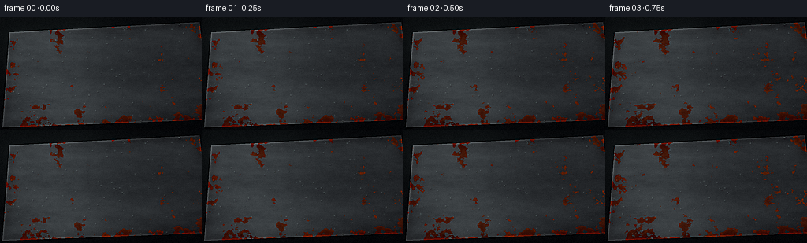
视觉工具实际返回图片 3
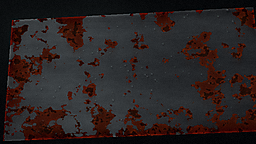
视觉工具实际返回图片 4
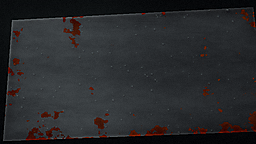
视觉工具实际返回图片 5
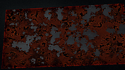
视觉工具实际返回图片 6
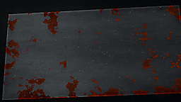
视觉工具实际返回图片 7
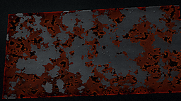
视觉工具实际返回图片 8

视觉工具实际返回图片 9
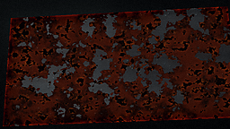
视觉工具实际返回图片 10
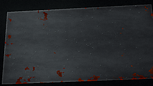
视觉工具实际返回图片 11
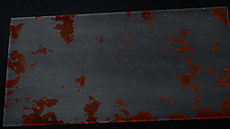
视觉工具实际返回图片 12
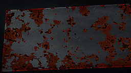
视觉工具实际返回图片 13
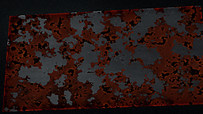
保存候选 4 份；完成命令 18 次；可验证图片返回 13 张。原始 API 响应与完整日志保留在本地。